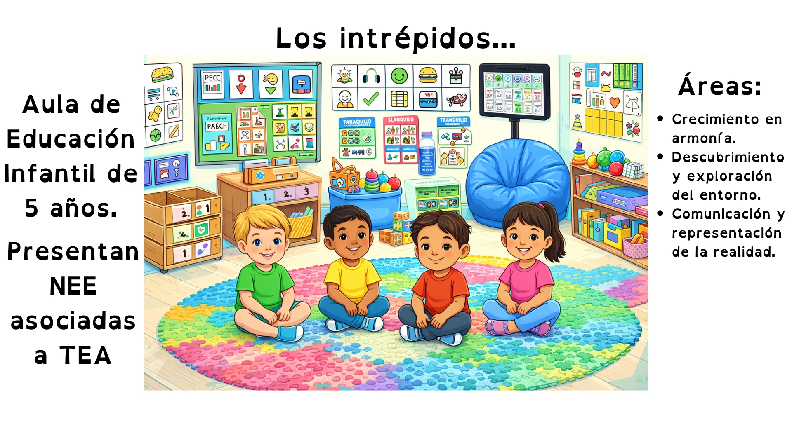
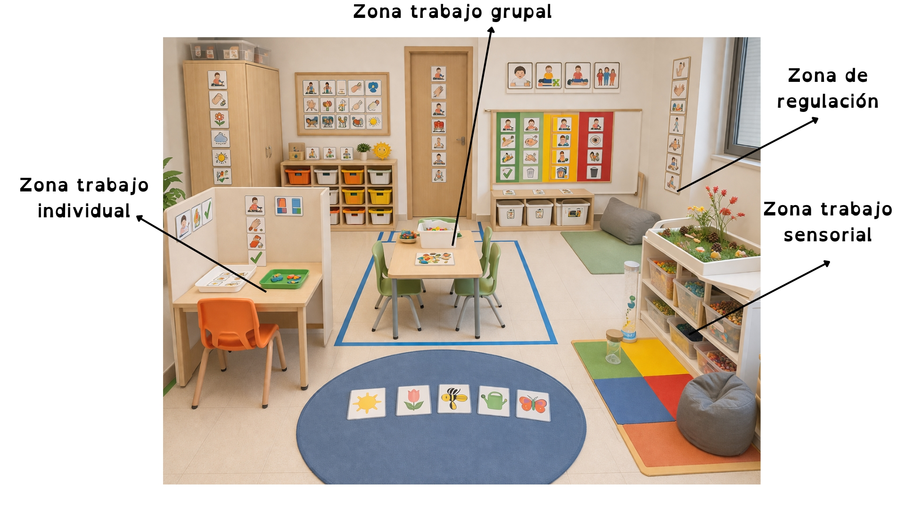
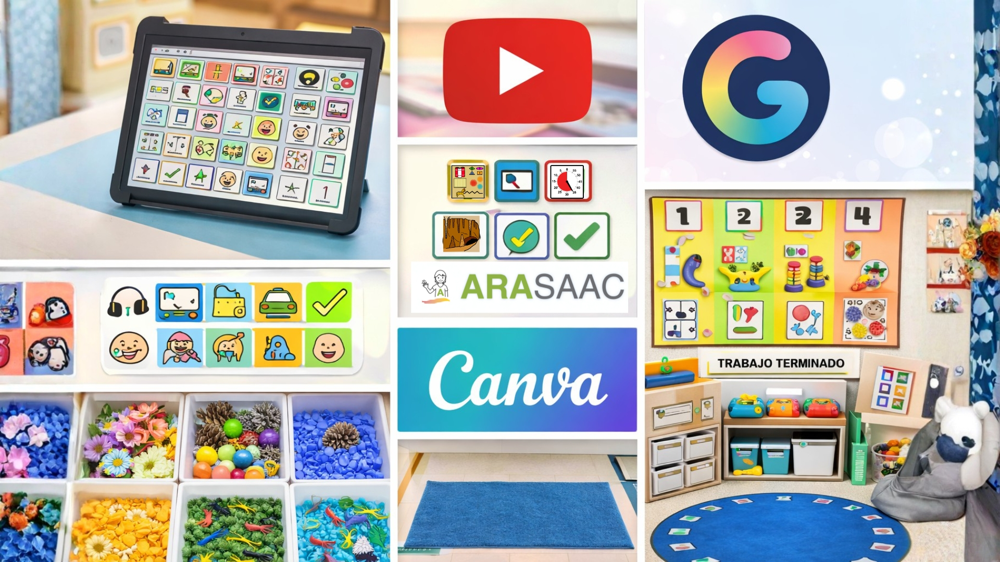

Descripción
Esta Situación de Aprendizaje se desarrolla en un aula de Educación Infantil dentro de un Centro Público de Educación Especial, con alumnado con necesidades educativas especiales asociadas a TEA.
La propuesta se fundamenta en un enfoque estructurado, predecible y altamente visual, combinando estrategias del modelo TEACCH, el enfoque naturalista (Modelo Denver) y los principios del Diseño Universal para el Aprendizaje (DUA), con el objetivo de favorecer la presencia, participación y aprendizaje del alumnado.
A través de experiencias sensoriales, manipulativas y comunicativas vinculadas a la primavera, se promueve el desarrollo de la comunicación funcional, la atención conjunta, la regulación conductual y la interacción con el entorno.
Etapa educativa y áreas implicadas
Educación Infantil, alumnado de 5 años con necesidades educativas especiales asociadas a TEA.
La presente Situación de Aprendizaje se enmarca en las áreas establecidas en el currículo de Educación Infantil del Principado de Asturias (Decreto 56/2022, de 5 de agosto), concretamente:
Área I: Crecimiento en armonía
Orientada al desarrollo de la identidad, la regulación emocional, la autonomía personal y la interacción con el entorno, aspectos especialmente relevantes en alumnado con TEA.
Área II: Descubrimiento y exploración del entorno
Centrada en la exploración del medio físico y natural, favoreciendo la comprensión de los elementos propios de la primavera a través de experiencias sensoriales y manipulativas.
Área III: Comunicación y representación de la realidad
Dirigida al desarrollo de la comunicación funcional mediante el uso de sistemas aumentativos y alternativos de comunicación (SAAC), así como a la expresión a través de diferentes lenguajes (visual, gestual y digital).

Agrupamientos y organización espacial del aula
Se combinan distintos agrupamientos para favorecer la inclusión y el acceso al aprendizaje:
Trabajo individual estructurado (mesas TEACCH)
Trabajo en pequeño grupo
Actividades en gran grupo (asamblea)
Intervenciones uno a uno
El aula se organiza en espacios claramente delimitados:
Zona de trabajo individual
Zona de trabajo grupal
Zona sensorial
Zona de regulación

Temporalización, herramientas y recursos.
La SdA se desarrollará a lo largo de 10 sesiones, de aproximadamente 30 minutos, ajustadas a los tiempos de atención del alumnado.
Se utilizarán como recursos:
- Comunicador (tablet)
- Pictogramas (ARASAAC)
- Paneles TEACCH
- Bandejas sensoriales
- Genially / Canva (docente)
- Vídeos cortos (YouTube adaptado)
- Material manipulativo (flores, texturas, animales, etc.)

Producto final
🌼 Infografía visual interactiva (adaptada), elaborada con apoyo, donde el alumnado identificará elementos de la primavera (colores, animales, objetos).
🎥 Vídeo corto donde se recojan evidencias de participación: uso del comunicador, elección de elementos, interacción con materiales y seguimiento de rutinas.